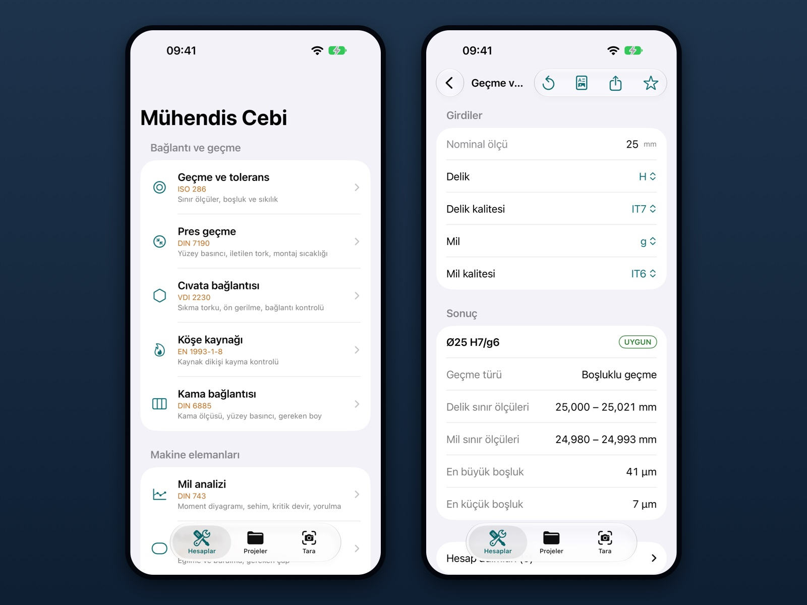
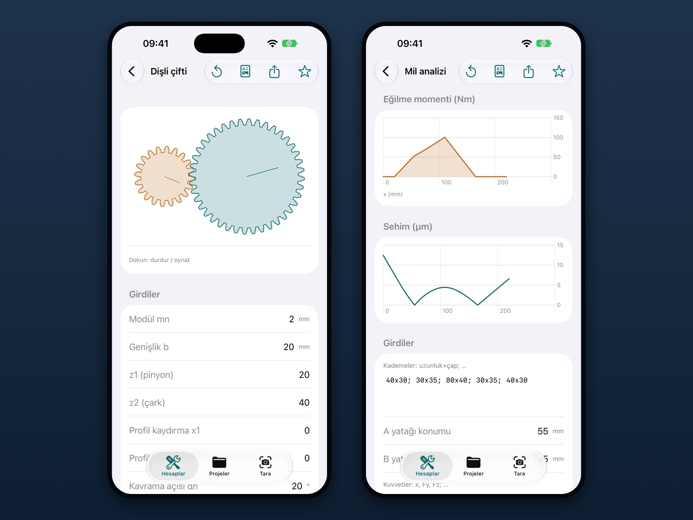
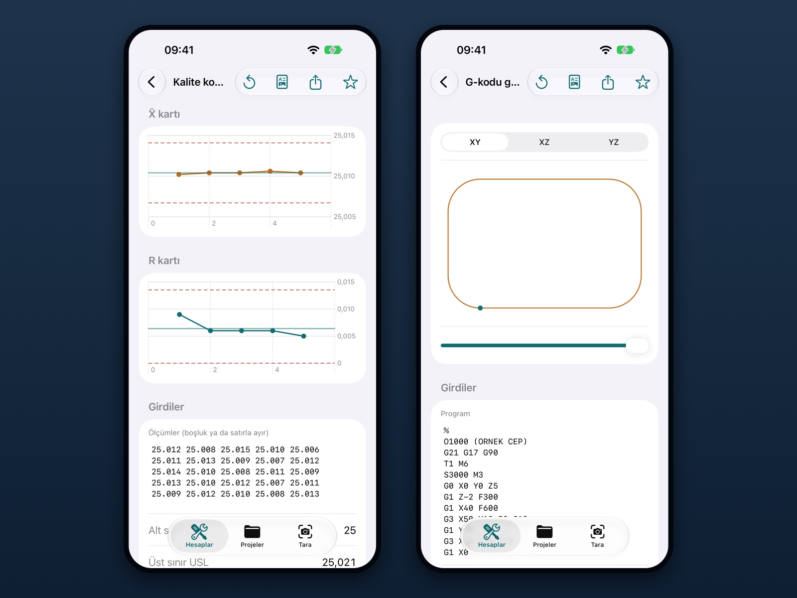

Mühendis Cebi
Makine tasarımı ve atölye için Android ve iOS hesap uygulaması. Geçme, pres geçme, cıvata, dişli, mil ve proses yeterliliği ilgili standarda göre hesaplanır, her adım gösterilir ve sonuçlar tek bir PDF hesap raporunda toplanır.
Bağımsız ürün · Zeytin Studio



Çözdüğü problem
Tasarım ve üretim mühendisleri her gün aynı kontrolleri yapar: H7/g6 geçmenin sınır ölçüleri, M12 cıvatanın sıkma torku, kamanın torku taşıyıp taşımadığı, prosesin yeterli olup olmadığı. Bunun için genelde basılı tablolar, kimsenin doğrulamadığı Excel dosyaları ya da ağır masaüstü yazılımları kullanılır. Tablonun yanlış satırından alınan ya da yanlış basamağa yuvarlanan bir değer doğrudan resme geçer ve sayıya nasıl ulaşıldığı hiçbir yerde kayıtlı kalmaz.
Ne işe yarar
Mühendis Cebi bu hesapları tek bir uygulamada toplar, internetsiz çalışır ve hesabı açıkça gösterir. Her sonuç formüller, ara değerler ve girdi standardın kapsadığı aralığın dışına çıktığında uyarılarla birlikte gelir. Hesaplar bir projede toplanıp bir makinenin tek PDF hesap raporu olarak alınabilir.
Hesaplar
- Bağlantılar ve geçmeler: ISO 286 geçme, DIN 7190 pres geçme, VDI 2230 cıvata, EN 1993-1-8 köşe kaynağı, DIN 6885 kama
- Makine elemanları: DIN 743 mil analizi, ISO 281 rulman ömrü, ISO 21771 / ISO 6336 dişli, EN 13906 yay
- Atölye: kesme verileri, G-kodu görüntüleyici, takım ömrü, SPC (Cp, Cpk, kontrol kartları), teklif, kontrol listesi
- Tablolar: dişler, çelik profiller, malzemeler, birim çevirici
Kameradan tolerans okuma
Kamera teknik resme tutulduğunda “Ø25 H7/g6” gibi tolerans yazılarını okur ve geçme hesabını değerler dolu olarak açar; sınır ölçüler elle yazılmaz.
Hassasiyet ve doğrulama
Hesap motoru doğru görünsün diye ayarlanmadı, standartlara karşı denetlendi:
- Sınır ölçüler mikron çözünürlüğünü korur: ±4,5 µm'lik js6 toleransı yuvarlanıp kaybolmaz, 7,9955 – 8,0045 mm olarak gösterilir
- Dişli mukavemeti ISO 6336-2 ve ISO 6336-3'ün 2019 baskılarını izler; mil hesabı EN 10083 / EN 10025 tablolarından çapa bağlı malzeme değerleri kullanır
- Geçersiz girdi sessizce varsayılanla değiştirilmez, reddedilir; fiziksel anlamı olmayan sonuçlar gösterilmez
- 130'dan fazla birim testi; tablo değerleri bağımsız kaynaklarla karşılaştırıldı
Mühendislik yaklaşımı
Hesaplar ortak bir motorda bir kez tanımlanır: girdiler, doğrulama, formüller ve rapor. İki uygulama da aynı tanımları gösterir; motordaki bir düzeltme Android'e, iOS'a ve kayıtlı hesaplara aynı anda ulaşır. Kayıtlarda sonuç değil girdiler saklanır, hesap açıldığında yeniden yapılır.
İki dil, iki sayı biçimi
Uygulama Türkçe ve İngilizce çalışır. Mühendislik metinleri, uyarılar ve raporlar tek bir ortak sözlükten, sayılı cümle şablonlarıyla çevrilir. Sayılar dile göre yazılır (1.234,5 ya da 1,234.5) ve kayıtlı hesaplar hangi biçimde yazıldığını hatırlar.
Genel yapı ve teknolojiler
- İki uygulamanın da kullandığı, Kotlin Multiplatform ile yazılmış ortak hesap motoru
- Android uygulaması Jetpack Compose ile; iOS uygulaması SwiftUI ve Swift Charts ile, XcodeGen yapılandırmasıyla
- Tolerans okuyucu için cihaz üzerinde metin tanıma (Android'de ML Kit, iOS'ta VisionKit)
- Tek hesap ve proje raporları için yerel PDF üretimi
- Dile duyarlı sayı okuma ile Türkçe / İngilizce arayüz
Durum: Geliştirme aşamasında; henüz App Store ya da Google Play'de yayında değil. Sonuçlar ön boyutlandırma ve hızlı kontrol içindir. Kaynak kodu gizlidir.